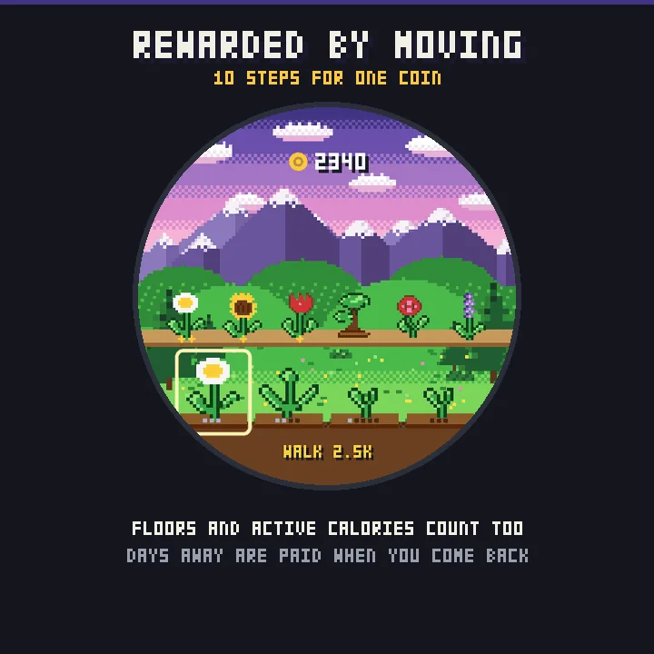
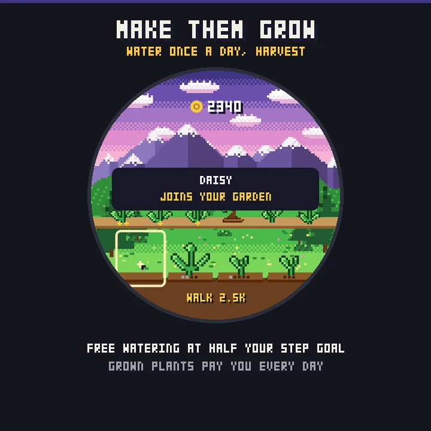
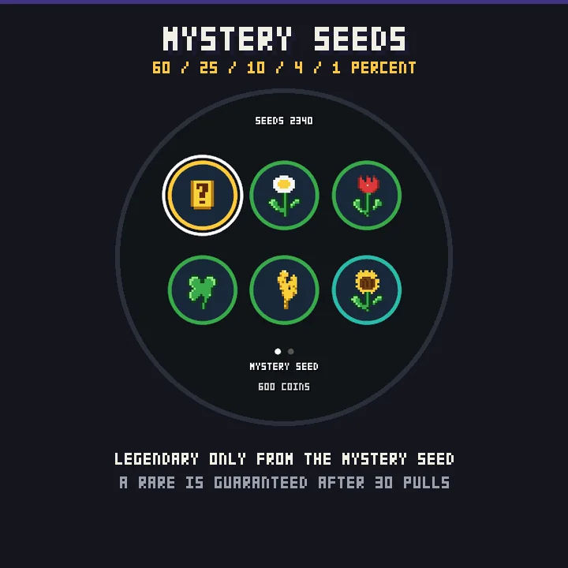
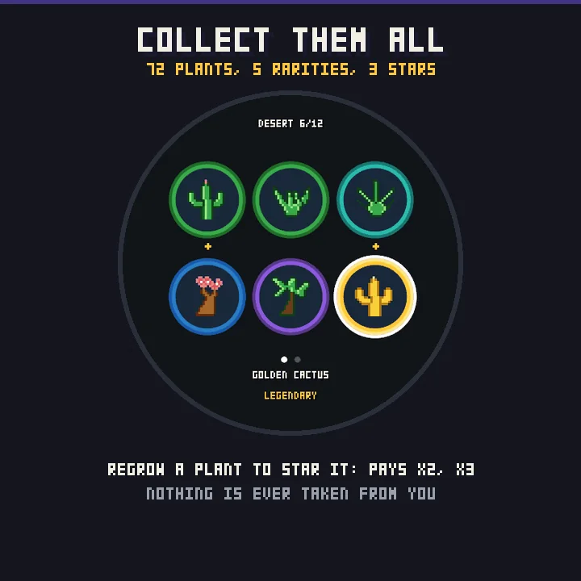
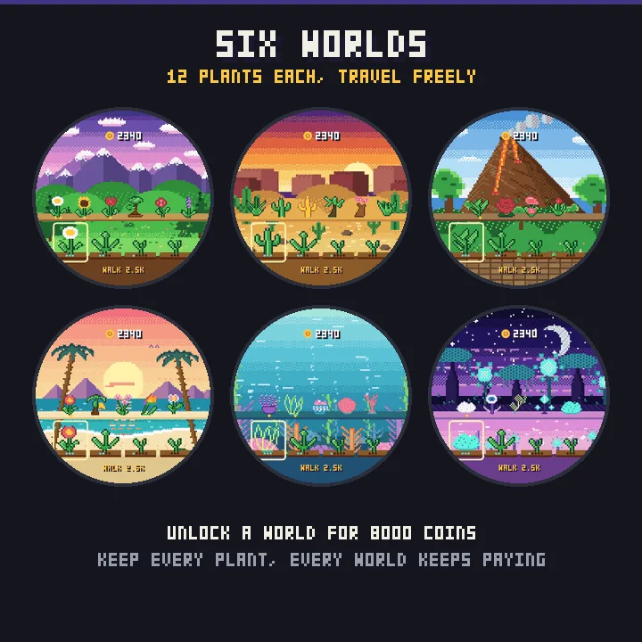

How to play - it is all on the watch
Open Step Garden from your apps list (press START, pick it). Hold UP - or long-press the screen on a touch watch - for the shop. UP/DOWN or swipe move between your plots, START or tap acts on the selected plot.
Step Garden is a pixel-art garden that grows with your day. No phone app, no account, no background process: it reads your Garmin activity when you open it and pays you for what you did since your last visit.
Walk, earn coins
Every 10 steps is one coin. Not a walker? Floors and active calories count too: one floor is worth 100 steps and 7 active calories are worth 100 steps, so a cyclist, a rower or a stair climber earns like a walker. The best of the three counts - never all three added up.
Miss a few days? Coins for each day away are credited when you come back, with a welcome-back note.
Plant, water, harvest
You start with two plots and enough coins for two seeds. Buy a seed, plant it, water it. Watering is free once a day as soon as you have reached half of your step goal, and it grows every plot at once; fertilizer (300 coins) grows one plot by one more step, any time - including on a day you have not walked enough. Plants need 2 to 7 waterings depending on rarity. A grown plant joins your garden bed and pays you every day you water.
Nothing is ever taken from you: a plant that is not watered waits, it never dies. No streak to break, no plant to lose.
Mystery seeds, honest odds
The catalogue sells every common, uncommon, rare and epic plant of your current world at a fixed price. Legendary plants come only from the mystery seed (600 coins): 60% common, 25% uncommon, 10% rare, 4% epic, 1% legendary, and after 30 pulls without a rare or better the next one is guaranteed rare. A duplicate is never a loss: it is planted anyway and counts towards that plant's stars.
Stars
Grow the same plant several times and it earns up to three stars, doubling then tripling what it pays. The collection tells you how many more you need.
Six worlds, 72 plants
Meadow, desert, jungle volcano, tropical beach, coral reef and an alien jungle under a crescent moon - each with 12 plants of its own. Unlock a world for 8,000 coins, travel between them freely, keep every plant you have grown in every world. Your old worlds keep paying too.
Collection and stats
The collection shows every plant of the world, grown or still a silhouette, with its rarity halo and stars. Stats keep your personal records: best day, best payout, days watered, plants grown, mystery seeds pulled.
Made for buttons and for touch
Every screen works with the five buttons alone and with touch alone. Every supported watch below was run in the simulator, buttons and touch, before being listed.
- Forerunner 165 / 165 Music / 265 / 265S / 570 / 965 / 970 Venu 2 / 2S / 2 Plus / 3 / 3S / 4 vivoactive 5 / 6 fenix 8 / 8 Pro / E, epix (Gen 2) / epix Pro (Gen 2)
- Instinct 3 AMOLED, MARQ (Gen 2), Descent G2 / Mk3, D2 Air X10 / Mach 1 / Mach 2 / Mach 2 Pro, Approach S50 / S70
Permissions: your Garmin profile, to compute your resting metabolism from your height, weight and age so that only active calories count. If the profile is not filled in, only steps and floors count - no made-up number. Nothing leaves the watch.